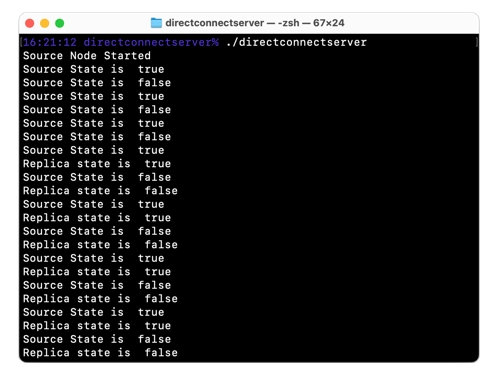

Simpleswitch Direct Server and Client
A minimalist Remote Object server and client.

The directconnectserver and directconnectclient applications are simple examples that can be used as starting points for more complex applications.
The directconnectserver application shares a rep-file defined SimpleSwitch object, while the directconnectclient application gets a replica of it. The server has a two second timer, and every time it times out, the boolean state of the boolean currState property of the SimpleSwitch object is toggled and the current state is printed out to the terminal. Each client connects to the state change of the SimpleSwitch replica, and emits the current state back to the server. For every connected client, the server prints out the state of the client back to the terminal.
The implementation of these two applications are documented at Example 1.
Other simple examples are located at tests/manual/examples/simpleswitch. These three applications are documented at Example 2 and Example 3.